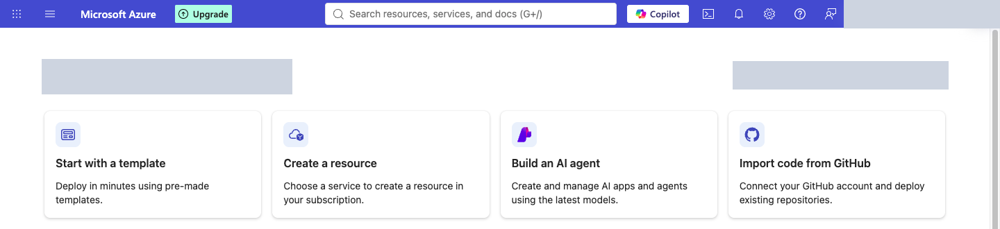
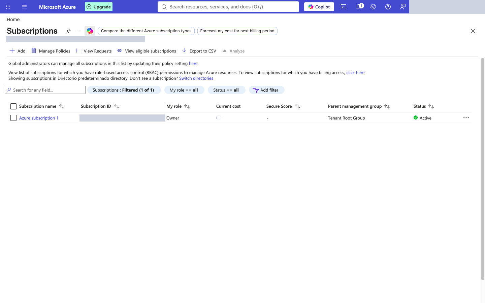
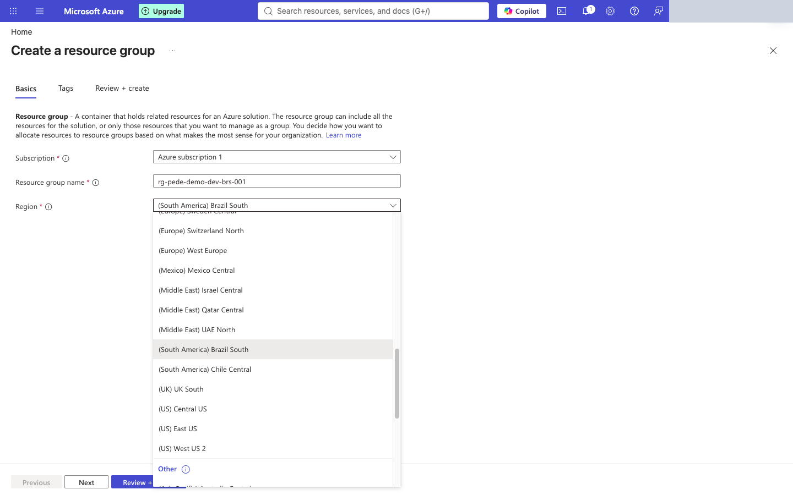
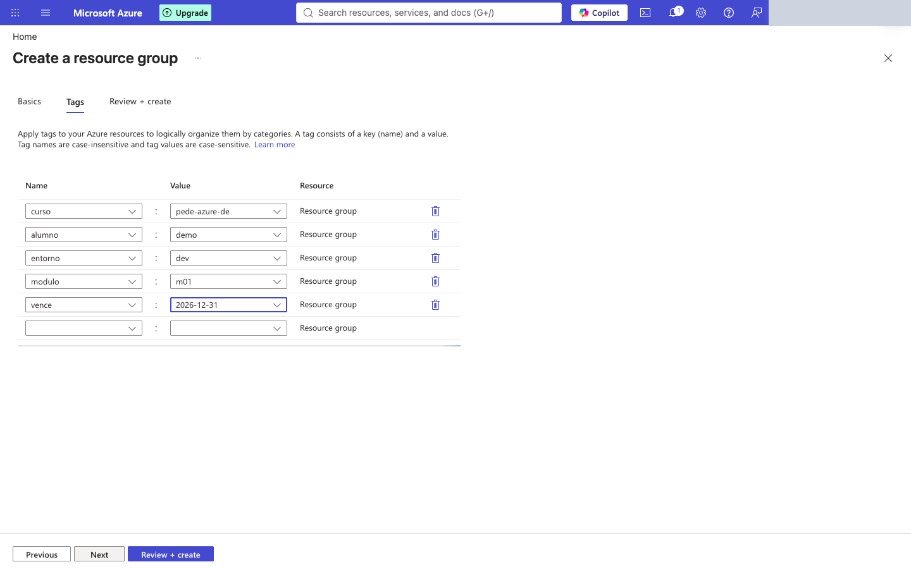
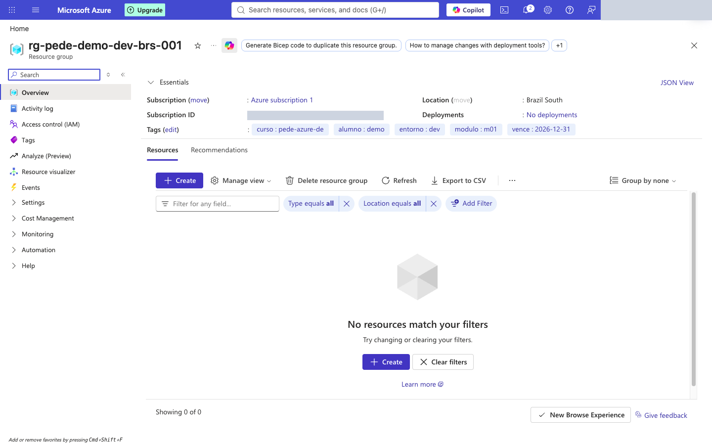

Hoy conoces la nube y aprendes a elegir dónde vive una plataforma de datos
Módulo 1 · Introducción a la nube · P.E. Data Engineer · Azure
Módulo 1 · Introducción a la nube · P.E. Data Engineer · Azure
Conecto datos, analítica y agentes de IA para resolver problemas de negocio.
Claude / Anthropic · Microsoft Foundry · Databricks · Google Cloud · LangChain · AWS Bedrock
| Aspecto | Centro de datos propio | Nube |
|---|---|---|
| Inversión | Compra inicial (CapEx) | Pago por uso (OpEx) |
| Tiempo para tener un servidor | Semanas o meses | Minutos |
| Capacidad | Se compra para el peor caso | Se ajusta a la demanda |
| Mantenimiento del hardware | Tu equipo | Del proveedor |
| Dónde está | Tu local | Regiones del proveedor |
| Ola | Cuello de botella | Solución | Nuevo problema |
|---|---|---|---|
| Tiempo compartido | Computadoras carísimas | Compartir una máquina | Poco aislamiento |
| Virtualización | Hardware infrautilizado | Varias VM por servidor | Seguir administrando SO y servidores |
| Servicios por API | Pedir y montar infraestructura | Autoservicio y pago por uso | Costos sin control, dependencia |
| Serverless y datos+IA | Administrar infraestructura | Servicios administrados | Complejidad de integrar muchos servicios |
| Modelo | Quién la opera / quién la usa | Ejemplo | Cuándo conviene |
|---|---|---|---|
| Pública | Un proveedor, para muchos clientes | Azure, AWS, Google Cloud | Casi todo: agilidad y pago por uso |
| Privada | Una organización, para sí misma | Centro de datos propio con VMware u OpenStack | Control total o regulación estricta |
| Híbrida | Combina privada y pública | Datos sensibles locales + analítica en Azure | Migración gradual o restricciones de datos |
| Comunidad | Varias organizaciones con intereses comunes | Nube compartida entre entidades públicas | Normas comunes de sector |
| Multinube | Dos o más nubes públicas | Datos en Azure, modelos en otra nube | Evitar dependencia o aprovechar fortalezas |
| Modelo | Qué recibes | Ejemplo en Azure | Tú administras |
|---|---|---|---|
| IaaS | Máquinas virtuales, redes y discos | Azure Virtual Machines | SO, middleware, aplicación y datos |
| PaaS | Plataforma lista para tu código o tus datos | Azure SQL Database, Azure App Service, Azure Databricks | Aplicación y datos |
| SaaS | Aplicación terminada | Microsoft 365, Power BI | Tu información y quién accede |
| Serverless | Código o flujo que se ejecuta por evento | Azure Functions | Solo tu código y su configuración |
| Capa | Local | IaaS | PaaS | SaaS |
|---|---|---|---|---|
| Datos e identidades | Cliente | Cliente | Cliente | Cliente |
| Aplicaciones | Cliente | Cliente | Compartida | Proveedor |
| Sistema operativo | Cliente | Cliente | Proveedor | Proveedor |
| Red y virtualización | Cliente | Proveedor | Proveedor | Proveedor |
| Centro de datos físico | Cliente | Proveedor | Proveedor | Proveedor |
| AWS |  Microsoft Azure Microsoft Azure |  Google Cloud Google Cloud | |
|---|---|---|---|
| Inicio comercial | 2006 (S3, EC2) | 2010 | 2008 App Engine; 2013 Compute Engine |
| Fortaleza típica | Amplitud de servicios y madurez | Integración con Microsoft (Entra ID, SQL Server, Microsoft 365) y empresa | Analítica de datos e IA |
| Servicio insignia de datos | S3, Redshift | ADLS Gen2, Azure SQL, Synapse/Fabric | BigQuery |
| Otros jugadores | Alibaba Cloud · Oracle Cloud Infrastructure · IBM Cloud |
| Región | Quién lidera | Dato verificable |
|---|---|---|
| Global (Q2 2026) | Amazon 28% · Microsoft 20% · Google 15% | Los tres suman 63% del gasto en infraestructura cloud (US$143,4 mil millones en el trimestre, +43% anual) |
| Estados Unidos | Los tres grandes | Mayor mercado por amplio margen; creció 49% en Q2 2026 |
| Europa | Los tres grandes; proveedores europeos ≈ 15% local | La cuota de proveedores locales se mantiene estable desde 2022 (Synergy, 2025) |
| China | Alibaba, Tencent, China Telecom y Huawei | Los proveedores occidentales están muy restringidos (Synergy, ago-2024) |
| Resto de Asia-Pacífico y resto del mundo | Los tres grandes | Crecen más rápido India, Indonesia, Tailandia y Malasia (Q2 2026) |
| Latinoamérica | Sin cuota regional pública verificada | Para decidir en Perú: región disponible, latencia y cumplimiento (Ley 29733), no el ranking |
Fuente: Synergy Research Group. Cuota = gasto en servicios de infraestructura cloud (IaaS, PaaS y nube privada alojada), no los ingresos totales de cada empresa. Los datos regionales son de ediciones anteriores a la global.
| Función | AWS | Azure | Google Cloud |
|---|---|---|---|
| Almacenamiento de objetos | Amazon S3 | Blob Storage / ADLS Gen2 | Cloud Storage |
| Base relacional administrada | Amazon RDS | Azure SQL Database | Cloud SQL |
| Almacén analítico (warehouse) | Amazon Redshift | Azure Synapse Analytics / Microsoft Fabric | BigQuery |
| Spark administrado | Amazon EMR | Azure Databricks | Dataproc |
| Integración / orquestación de datos | AWS Glue | Azure Data Factory | Cloud Data Fusion / Cloud Composer |
| Mensajería y streaming | Amazon Kinesis | Azure Event Hubs | Pub/Sub |
| Base NoSQL | Amazon DynamoDB | Azure Cosmos DB | Firestore / Bigtable |
| Criterio | Pregunta que respondes | Si pesa mucho, tiende a… |
|---|---|---|
| Cumplimiento y datos | ¿Hay datos personales o regulados? ¿Dónde pueden vivir? | Híbrida o región específica |
| Costo | ¿La demanda es estable o con picos? | Pública si hay picos; evaluar si es estable |
| Habilidades | ¿Qué sabe operar tu equipo hoy? | Servicios administrados (PaaS) |
| Integración | ¿Qué sistemas ya usa la empresa? | El proveedor que mejor se integre |
| Riesgo de dependencia | ¿Cuánto cuesta salir luego? | Estándares abiertos; multinube en casos justificados |
Administradores de TI: Owner
Analistas de finanzas: Reader
Analistas de datos: Contributor solo en dev
Una suscripción por área = una factura y un presupuesto por área. En este módulo tú trabajas en una suscripción del instructor, dentro de un grupo de recursos.
| Parte | Qué es | Ejemplo |
|---|---|---|
| tipo | Abreviatura oficial del recurso | rg · st · sql · adf · dbw · kv |
| carga | Proyecto | pede |
| alumno | Dueño (evita choques entre alumnos) | margue |
| entorno | Etapa | dev |
| región | Código corto | brs (Brazil South) |
| instancia | Contador | 001 |
| Resultado | tipo-carga-alumno-entorno-región-instancia | rg-pede-margue-dev-brs-001 |
| Recurso | Largo | Caracteres | Único en |
|---|---|---|---|
| Grupo de recursos | 1–90 | letras, números, _ - . ( ) | suscripción |
| Almacenamiento (ADLS Gen2) | 3–24 | solo minúsculas y números | todo Azure |
| Servidor SQL | 1–63 | minúsculas, números, guiones | todo Azure |
| Data Factory | 3–63 | letras, números, guiones | todo Azure |
| Key Vault | 3–24 | letras, números, guiones | todo Azure |
| Workspace Databricks | 3–64 | letras, números, _ - | grupo de recursos |





Abrir el generador de nombres ↗
| Recurso | Nombre |
|---|---|
| Grupo de recursos | rg-pede-margue-dev-eus-001 |
| Almacenamiento (ADLS Gen2) | stpedemarguedldeveus001 |
| Servidor Azure SQL | sql-pede-margue-dev-eus-001 |
| Azure Data Factory | adf-pede-margue-dev-eus-001 |
| Workspace de Databricks | dbw-pede-margue-dev-eus-001 |
| Key Vault | kv-pede-margue-dev-001 |
Etiquetas del grupo: curso=pede-azure-de · alumno=margue · entorno=dev · modulo=m01 · vence=2026-12-31
| Servicio | Modelo |
|---|---|
| Virtual Machines | IaaS |
| Virtual Network | IaaS (red) |
| Azure SQL Database | PaaS |
| Azure App Service | PaaS |
| Azure Functions | Serverless (PaaS) |
| Microsoft 365 | SaaS |
| Power BI | SaaS |
| Azure Databricks | PaaS |
No hay una cifra única correcta: depende de región, nivel de acceso y redundancia, y cambia con el tiempo. Registra fecha, región, supuestos y enlace o captura.
| Función | AWS | Azure | Google Cloud |
|---|---|---|---|
| Almacenamiento de objetos | Amazon S3 | Blob Storage / ADLS Gen2 | Cloud Storage |
| Base relacional administrada | Amazon RDS | Azure SQL Database | Cloud SQL |
Modelo recomendado: híbrido al inicio, con evolución a nube pública. Criterios: (1) cumplimiento: hay datos personales (Ley 29733), decidir región y qué datos salen del servidor propio; (2) costo: picos en campañas, capacidad elástica; (3) habilidades: el equipo conoce SQL Server, los servicios administrados PaaS reducen operación; (4) integración: SQL Server se integra bien con Azure. Ventajas: elasticidad en campañas; menos operación con PaaS. Riesgos: costos sin control; dependencia del proveedor. Mitigación: presupuestos y alertas de costo desde el primer día; datos en formatos abiertos (CSV, Parquet, Delta).
No cumple. Falla el autoservicio bajo demanda (tarda semanas y requiere ticket) y el servicio medido (precio anual fijo). Basta con justificar una.
Orden: S3 (2006) → Azure disponible comercialmente (2010) → definición del NIST (2011).
Híbrida: los datos personales se quedan en el entorno propio o en una región permitida y la analítica corre en la nube pública. También vale pública con región específica si justifican el cumplimiento.
El proveedor aplica los parches del motor (PaaS). El cliente decide quién accede a los datos: datos e identidades nunca se delegan.
Cualquier par coherente: elasticidad → costos sin control; pago por uso → factura inesperada; servicios administrados → dependencia del proveedor.